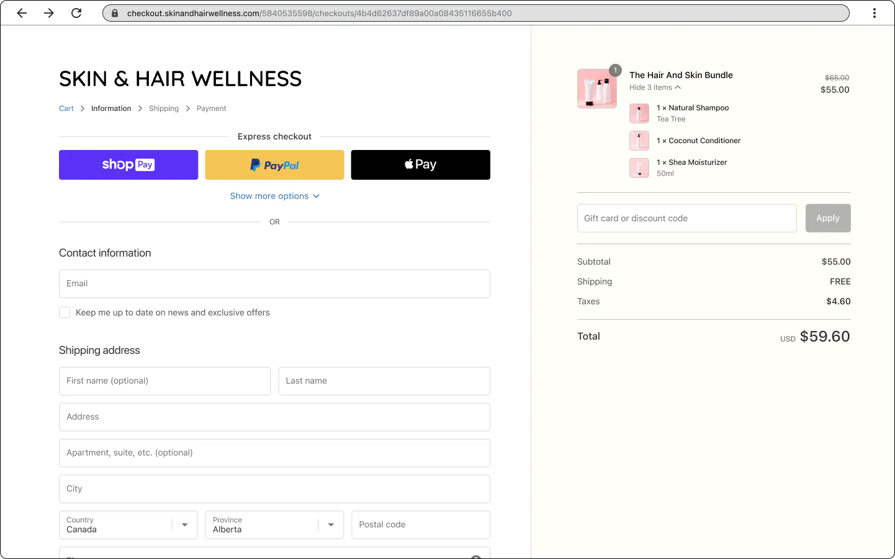
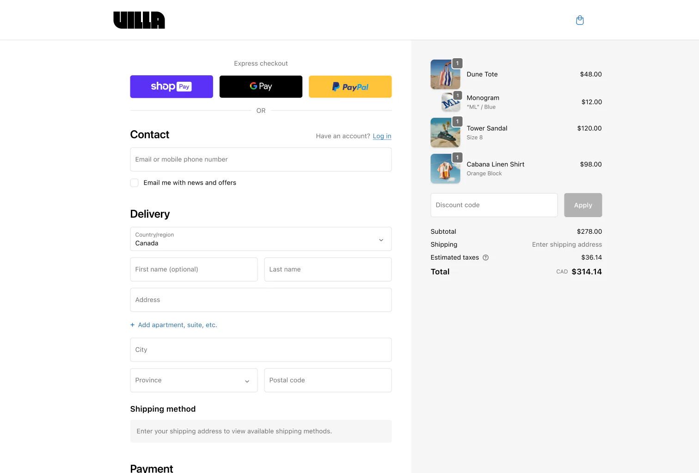
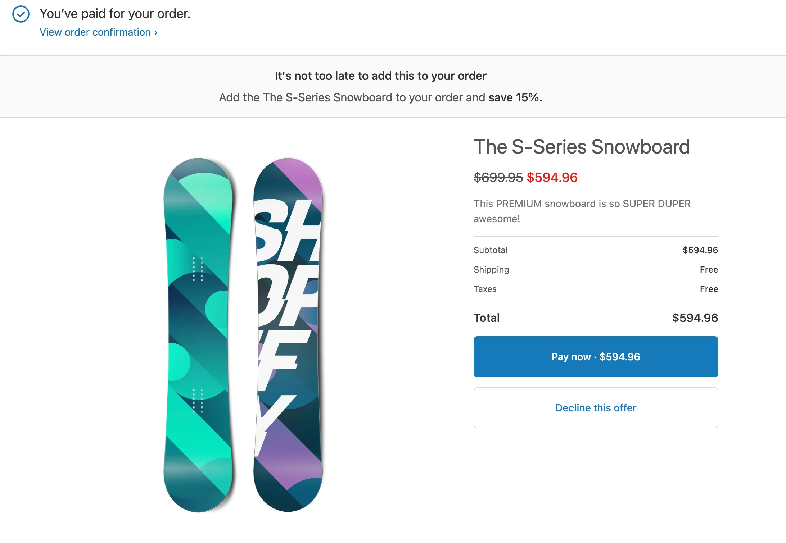

Merchandising y catálogo visual
Presentar el producto de forma más rica y vender conjuntos completos.
Propuesta de evolución web · Shopify
Una selección de capacidades nativas y avanzadas de Shopify pensadas para mejorar la experiencia de cada clienta, aumentar el ticket medio y fidelizar a largo plazo.
Descubrir las funcionalidadesPresentar el producto de forma más rica y vender conjuntos completos.
Opciones de pago diferido, preventas y complementos en el carrito.
Crédito en tienda, upsells y tarjetas regalo que retienen el valor.
Programas de puntos, niveles VIP y referidos que convierten a cada clienta en prescriptora.
Campañas integradas y alianzas entre marcas sin riesgo de inventario.
Documentación oficial


Más allá del crédito en tienda y las tarjetas regalo, el ecosistema Shopify se integra con aplicaciones especializadas que construyen un programa de fidelización completo —puntos, niveles VIP y referidos— diseñado para aumentar la frecuencia de compra y el valor de vida de cada clienta.
de tasa de recompra registrada por marcas de moda tras lanzar un programa de fidelización con recompensas canjeables.
más gastan los miembros activos de un programa frente a las clientas no inscritas, según referencias del sector.
más de valor de vida (LTV) aportan las clientas captadas por referido frente a otros canales (Wharton).
de las personas confían más en la recomendación de alguien conocido que en cualquier anuncio de marca.
Las reseñas con foto y vídeo son el contenido más persuasivo de una ficha de producto: una clienta confía mucho más en cómo le queda una prenda a otra persona real que en cualquier mensaje de marca. Apps especializadas recopilan ese contenido de forma automática y lo muestran donde más decide la compra.
de las personas consulta reseñas online antes de comprar; el 93% reconoce que influyen en su decisión.
de conversión registran las fichas con contenido generado por clientas (UGC) frente a las que no lo tienen.
convierten mejor los productos con 11–30 reseñas que aquellos sin ninguna reseña.
más auténtica y fiable percibe la clienta una reseña con foto real frente al contenido de marca.
Instagram es el escaparate natural de la moda: donde la clienta descubre, guarda y desea. Conectar ese contenido con la tienda elimina el salto entre ver una prenda y comprarla, y convierte el feed en un canal de venta directo.
de ventas, de media, logran las marcas que etiquetan productos en sus publicaciones frente a las que no.
de personas pulsan cada mes una etiqueta de producto en publicaciones de Instagram Shopping.
de quienes compran en redes adquieren moda cada mes; es la categoría más buscada en Instagram.
de visitas a la ficha de producto generan las etiquetas frente a las publicaciones sin tag.
Siguiente paso
Cada una de estas funcionalidades puede priorizarse según los objetivos de la temporada. Estaremos encantados de definir un plan de implementación a medida.